PLC simulado, servidor OPC y Factory I/O
Enlazar por primera vez cuatro aplicaciones para ejecutar una secuencia automática de tres cilindros.
Estación simulada
Integración verificable
¿Qué se construye y qué se entrega?
Se entrega listo
- Programa Ladder de la secuencia.
- Escena de tres cilindros en Factory I/O.
- Tabla de direcciones Modbus Delta.
- Nombres y direcciones de los tags.
Trabajo de la dupla
- Crear y enlazar el simulador DVP-SE.
- Configurar el servidor OPC.
- Crear exactamente los tags indicados.
- Conectar la escena entregada.
- Validar y diagnosticar el recorrido de los datos.
Actividad paralela y rotación
Esta sesión · 6 duplas
Doce estudiantes desarrollan esta guía con PLC simulado y Factory I/O, mientras las otras seis duplas trabajan con las maquetas físicas y su guía correspondiente.
Próxima sesión
Las duplas cambian de actividad. Cada grupo debe dejar sus archivos, puertos y evidencias claramente identificados para completar la ruta pendiente.
Objetivo de aprendizaje
Comprender y comprobar cómo una variable viaja entre el programa Ladder, la memoria del PLC simulado, Modbus ASCII, KEPServerEX y Factory I/O.
Configurar
Driver Simulator SE, canal, dispositivo y tags.
Enlazar
Las cuatro aplicaciones respetando puertos, nombres, direcciones y sentido de las señales.
Validar
Value, Quality, Timestamp, sensores, etapas y movimiento de los cilindros.
Reconocer el proceso antes de conectarlo
Problema de automatización
Una celda utiliza tres cilindros de doble efecto. Cada movimiento debe llegar a su sensor final antes de habilitar el paso siguiente.
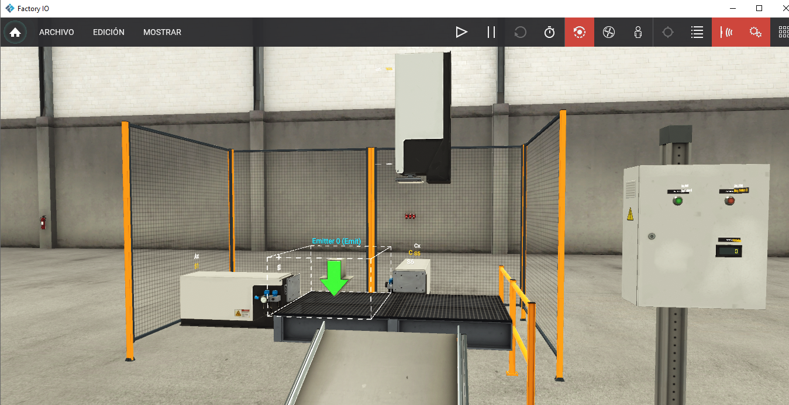
Las señales disponibles en la escena
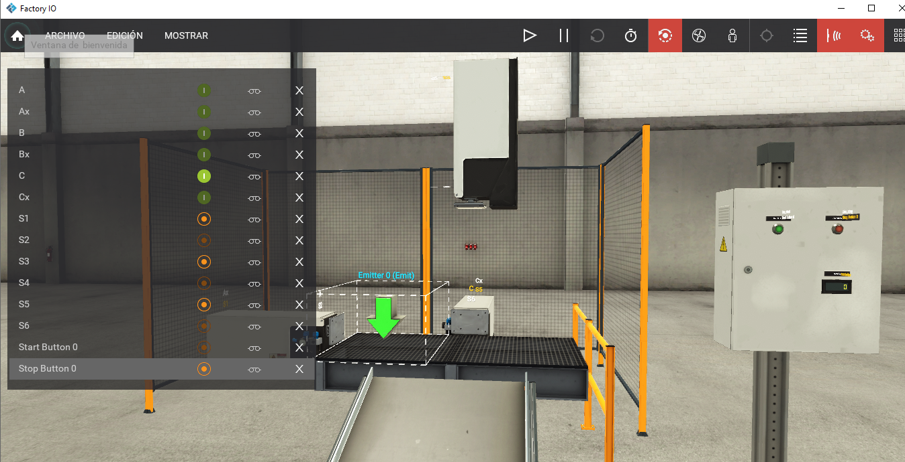
Actuadores
A, Ax, B, Bx, C y Cx reciben desde el PLC las órdenes de avance y retroceso.
Sensores
S1, S2, S3, S4, S5 y S6 informan al PLC las posiciones de los cilindros.
Órdenes
Start Button 0 y Stop Button 0 escriben las órdenes START y STOP.
Cuatro aplicaciones, una cadena de comunicación
Ladder y PLC simulado
Publica un puerto local
Servidor OPC
Cliente OPC y planta
COMMGR
Permite que otras aplicaciones accedan al simulador Delta mediante un puerto TCP local.
KEPServerEX
Lee y escribe memorias Delta usando Modbus ASCII, y las publica como tags OPC.
Factory I/O
Lee las órdenes de movimiento y escribe sensores y pulsadores mediante esos tags.
Ejemplo: ¿cómo avanza el cilindro A?
Pregunta
Si A se mueve pero la secuencia no pasa a B+, ¿conviene revisar primero el tag A o el retorno S2? Justifica.
El programa se entrega: hay que comprenderlo
Marcha
M16 corresponde a START, M17 a STOP y M100 conserva la marcha general.
Etapas
M0 a M5 representan los seis movimientos. Cada etapa ordena una salida.
Transiciones
Los sensores S1 a S6 confirman posiciones y permiten cambiar a la etapa siguiente.
| Etapa | Salida | Movimiento | Sensor que permite avanzar |
|---|---|---|---|
| M0 | Y0 | A+ | S2 · M11 |
| M1 | Y2 | B+ | S4 · M13 |
| M2 | Y1 | A− | S1 · M10 |
| M3 | Y3 | B− | S3 · M12 |
| M4 | Y4 | C+ | S6 · M15 |
| M5 | Y5 | C− | S5 · M14 |
Patrón usado para diseñar la secuencia
Preparar la carpeta de trabajo
Archivos obligatorios
Antes de abrirlos
- Crea una carpeta con los nombres de la dupla.
- Copia los archivos entregados.
- No renombres las señales dentro de Factory I/O.
- No modifiques el Ladder antes de probar la integración.
- Guarda capturas y registro de errores en la misma carpeta.
Paso 1 · Crear el driver Simulator SE
- Abre COMMGR.
- Agrega un driver nuevo.
- Asigna un nombre identificable, por ejemplo SIM_SE_DUPLA_01.
- Selecciona el modo Simulator.
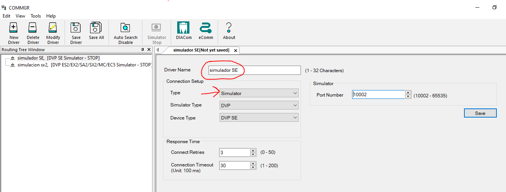
Paso 2 · Seleccionar el simulador correcto
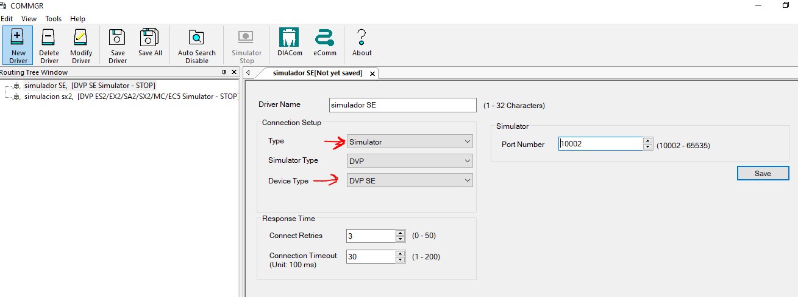
Tipo
Confirma Simulator.
Modelo
Selecciona DVP-SE, igual que en el proyecto ISPSoft.
Estado
Guarda y deja el driver activo.
Paso 3 · Anotar el puerto asignado
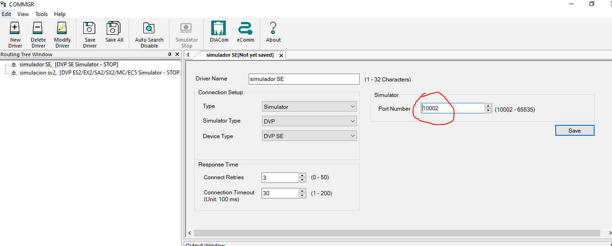
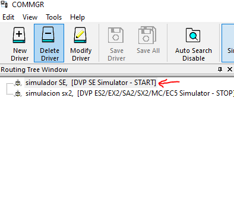
| Dato | Registro |
|---|---|
| Driver | ______________________ |
| Modelo | DVP-SE |
| Host | 127.0.0.1 |
| Puerto COMMGR | __________ |
Paso 4 · Enlazar ISPSoft y ejecutar el PLC simulado
- Abre Ispsoft y crea un proyecto.
- En Communication Settings, selecciona el driver creado en COMMGR.
- Inicia el simulador DVP-SE.
- Descarga el programa al simulador.
- Pasa a RUN y activa el monitoreo.
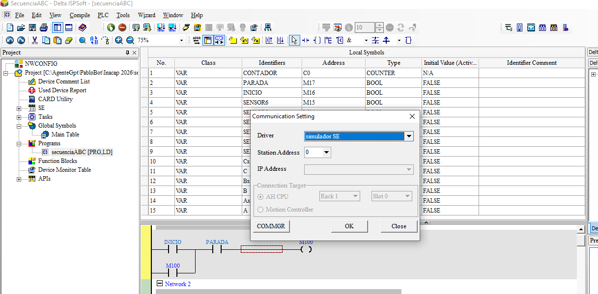
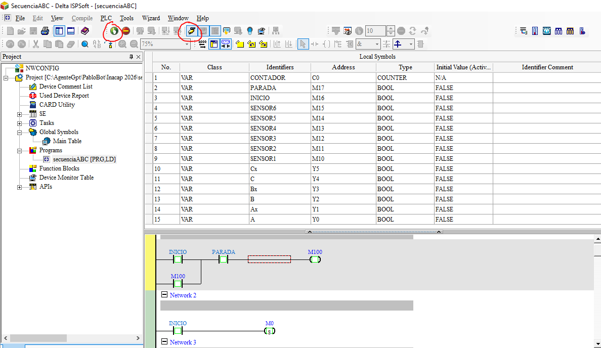
Antes de configurar: ¿qué hará KEPServerEX?
Adquirir
Se comunica con el PLC simulado mediante Modbus Serial ASCII encapsulado en TCP.
Organizar
Presenta cada dirección como un tag con nombre, tipo y frecuencia de actualización.
Publicar
Permite que Factory I/O navegue, lea y escriba las variables autorizadas mediante OPC.
Paso 5 · Crear el canal con el nombre exacto
New Channel
Nombre obligatorio: SE.
Driver
Selecciona Modbus Serial.
COM ID
Selecciona Ethernet Encapsulation.
Destino
Host 127.0.0.1 y puerto anotado de COMMGR.
| Campo | Valor |
|---|---|
| Channel Name | SE |
| Driver | Modbus Serial |
| COM ID | Ethernet Encapsulation |
| Host | 127.0.0.1 |
| Port | Puerto COMMGR: ______ |
| Serial | 9600 / 7 / Even / 1 |
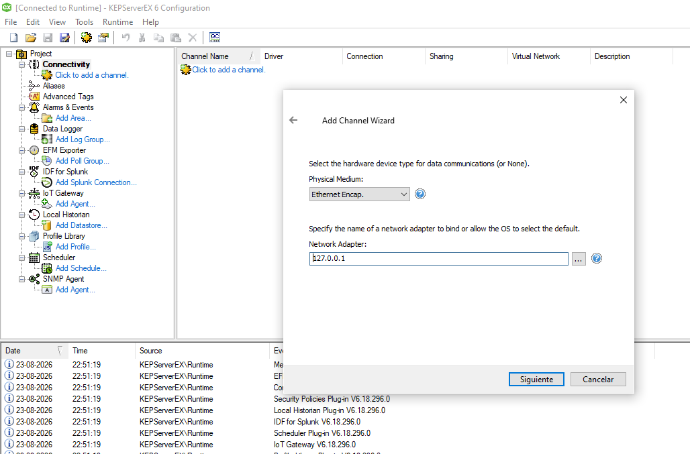
Paso 6 · Crear el dispositivo PLC
Jerarquía obligatoria
Clic derecho sobre SE → New Device. Usa exactamente:
└── PLC
Si el canal o el dispositivo cambia de nombre, cambia también la ruta de todos los items OPC.
| Campo | Valor |
|---|---|
| Device Name | PLC |
| Model / Protocol | Modbus ASCII |
| Device ID / Unit ID | 1 |
| Scan mode | Respect client-specified scan rate |
| Simulation | Disabled / False |
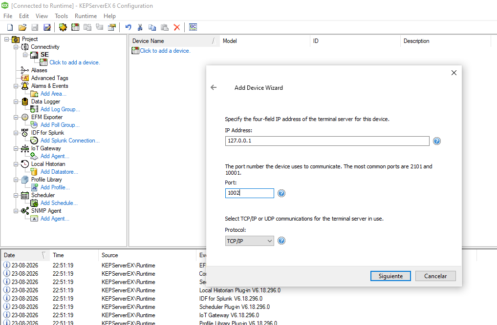
Paso 7 · Reproducir exactamente la lista de tags
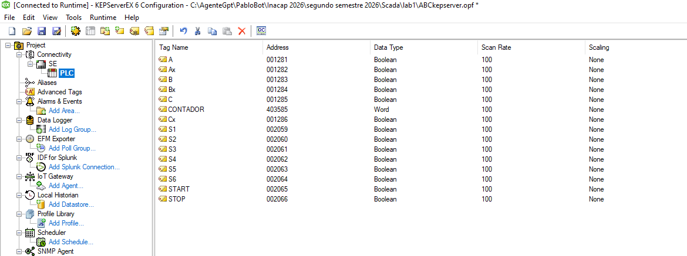
Coincidencia literal
Respeta mayúsculas y minúsculas: A no es a; Ax no es AX; START no es Inicio.
Ruta completa
Factory I/O buscará items como:
SE.PLC.S2
SE.PLC.START
Nombres, direcciones y tipos obligatorios
| Tag | Delta | Address | Data Type | Scan | Función |
|---|---|---|---|---|---|
| A | Y0 | 001281 | Boolean | 100 ms | A+ |
| Ax | Y1 | 001282 | Boolean | 100 ms | A− |
| B | Y2 | 001283 | Boolean | 100 ms | B+ |
| Bx | Y3 | 001284 | Boolean | 100 ms | B− |
| C | Y4 | 001285 | Boolean | 100 ms | C+ |
| Cx | Y5 | 001286 | Boolean | 100 ms | C− |
| S1 | M10 | 002059 | Boolean | 100 ms | A retraído |
| S2 | M11 | 002060 | Boolean | 100 ms | A extendido |
| S3 | M12 | 002061 | Boolean | 100 ms | B retraído |
| S4 | M13 | 002062 | Boolean | 100 ms | B extendido |
| S5 | M14 | 002063 | Boolean | 100 ms | C retraído |
| S6 | M15 | 002064 | Boolean | 100 ms | C extendido |
| START | M16 | 002065 | Boolean | 100 ms | Inicio |
| STOP | M17 | 002066 | Boolean | 100 ms | Parada |
| CONTADOR | C0 word | 403585 | Word | 100 ms | Conteo |
Método seguro para crear los tags
Primer tag
Crea A, dirección 001281, Boolean, 100 ms.
Primera validación
Aplica y confirma que no aparezca error de dirección.
Completar por familias
Actuadores → sensores → pulsadores → contador.
Comparar
Revisa línea por línea contra la imagen patrón.
Lista de control
- Canal: SE.
- Dispositivo: PLC.
- 15 tags en total.
- Nombres escritos literalmente.
- Direcciones con seis dígitos.
- Boolean salvo CONTADOR.
- CONTADOR como Word.
- Scan Rate de 100 ms.
Paso 8 · Validar KEPServerEX antes de abrir Factory I/O
- Abre OPC Quick Client.
- Navega a SE.PLC.
- Observa Value, Quality y Timestamp.
- Prueba START y un sensor autorizado.
- Comprueba el cambio simultáneo en ISPSoft.
| Indicador | Significado |
|---|---|
| Good | Dato válido y actualizado. |
| Bad | No se obtuvo un dato válido. |
| Uncertain | El valor requiere revisión. |
| Timestamp | Momento de la última actualización. |
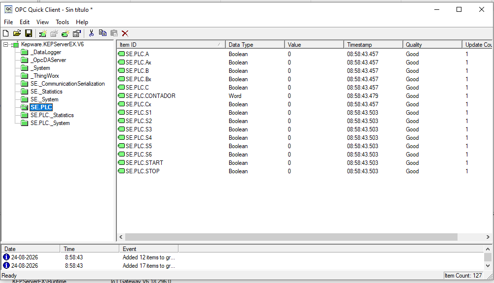
Paso 9 · Abrir la escena sin modificar la planta
- Abre el archivo entregado.
- Comprueba que estén A, Ax, B, Bx, C, Cx, S1-S6, Start Button 0 y Stop Button 0.
- No agregues ni elimines componentes.
- No cambies nombres de señales.
- Mantén la escena en STOP mientras conectas el driver.
Paso 10 · Conectar el cliente OPC
Drivers
Abre la configuración de drivers de Factory I/O.
Cliente OPC
Selecciona OPC Client DA o el cliente OPC disponible en la versión instalada.
Servidor
Selecciona KEPServerEX V6 y conecta.
Navegar
Despliega SE → PLC. Deben aparecer los 15 tags.
└── SE
└── PLC
├── A · Ax · B · Bx · C · Cx
├── S1 … S6
└── START · STOP · CONTADOR
Paso 11 · Asignar cada señal al item correcto
| Señal Factory I/O | Item OPC exacto | Dirección | Sentido |
|---|---|---|---|
| A | SE.PLC.A | 001281 | PLC → Factory I/O |
| Ax | SE.PLC.Ax | 001282 | PLC → Factory I/O |
| B / Bx | SE.PLC.B / SE.PLC.Bx | 001283 / 001284 | PLC → Factory I/O |
| C / Cx | SE.PLC.C / SE.PLC.Cx | 001285 / 001286 | PLC → Factory I/O |
| S1 … S6 | SE.PLC.S1 … SE.PLC.S6 | 002059 … 002064 | Factory I/O → PLC |
| Start Button 0 | SE.PLC.START | 002065 | Factory I/O → PLC |
| Stop Button 0 | SE.PLC.STOP | 002066 | Factory I/O → PLC |
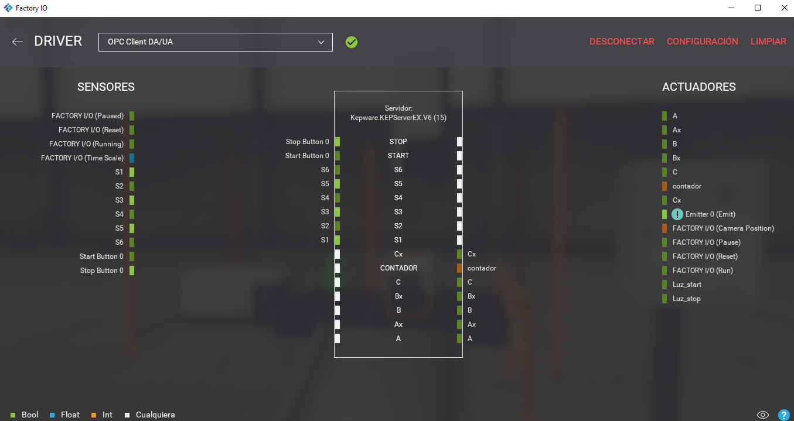
Paso 12 · Ejecutar en el orden correcto
Antes de PLAY
- Driver COMMGR activo.
- Puerto anotado y coincidente.
- PLC simulado en RUN.
- 15 tags con Quality Good.
- 14 señales de proceso mapeadas.
Durante la ejecución
- Presiona Start Button 0.
- Observa M0-M5 en ISPSoft.
- Observa tags en Quick Client.
- Comprueba los seis movimientos.
- Verifica CONTADOR.
Comprobar movimiento por movimiento
| Paso | Etapa / salida | Movimiento esperado | Confirmación | Resultado |
|---|---|---|---|---|
| 1 | M0 / A | A+ | S2 cambia a 1 | □ |
| 2 | M1 / B | B+ | S4 cambia a 1 | □ |
| 3 | M2 / Ax | A− | S1 cambia a 1 | □ |
| 4 | M3 / Bx | B− | S3 cambia a 1 | □ |
| 5 | M4 / C | C+ | S6 cambia a 1 | □ |
| 6 | M5 / Cx | C− | S5 cambia a 1 y vuelve a M0 | □ |
Si no funciona, diagnostica por capas
| Capa | Síntoma | Qué revisar |
|---|---|---|
| COMMGR | KEPServerEX no llega al simulador. | Driver activo, modelo DVP-SE y puerto anotado. |
| Canal SE | Todos los tags están Bad. | Modbus Serial, Ethernet Encapsulation, 127.0.0.1, puerto y formato serial. |
| Dispositivo PLC | No hay respuesta del equipo. | Modbus ASCII, Unit ID 1 y Simulation desactivada. |
| Tag | Solo un dato falla. | Nombre exacto, dirección de seis dígitos, tipo y acceso. |
| Factory I/O | El tag existe, pero no mueve o no retorna. | Item OPC asignado y sentido correcto. |
| Ladder | La etapa queda detenida. | Marcha M100, etapa activa, salida y sensor final esperado. |
Pruebas finales de la integración
| N.º | Acción | Respuesta esperada | Resultado |
|---|---|---|---|
| 1 | Abrir Quick Client. | Los 15 tags muestran Quality Good. | □ Cumple □ No cumple |
| 2 | Presionar Start Button 0. | START/M16 recibe el pulso y comienza M0/A. | □ Cumple □ No cumple |
| 3 | Ejecutar un ciclo. | A+ → B+ → A− → B− → C+ → C−. | □ Cumple □ No cumple |
| 4 | Observar S1-S6. | Cambian en Factory I/O, KEPServerEX e ISPSoft. | □ Cumple □ No cumple |
| 5 | Observar CONTADOR. | Incrementa al finalizar C+. | □ Cumple □ No cumple |
| 6 | Presionar Stop Button 0. | STOP/M17 detiene la marcha general. | □ Cumple □ No cumple |
| 7 | Interrumpir COMMGR. | Quality deja de ser Good. | □ Cumple □ No cumple |
| 8 | Restablecer el enlace. | La comunicación y la actualización se recuperan. | □ Cumple □ No cumple |
Entregables de la dupla
- Proyecto ISPSoft entregado, identificado.
- Nombre del driver y puerto COMMGR registrado.
- Proyecto KEPServerEX exportado.
- Captura del canal SE y dispositivo PLC.
- Captura de los 15 tags.
- Captura OPC Quick Client con Quality Good.
- Captura del mapeo en Factory I/O.
- Tabla de pruebas y registro de una falla diagnosticada.
| Criterio | Peso |
|---|---|
| Explica la arquitectura y el recorrido del dato | 15% |
| Configura COMMGR e identifica el puerto | 15% |
| Configura canal SE y dispositivo PLC | 15% |
| Crea exactamente los 15 tags | 20% |
| Conecta y mapea Factory I/O | 15% |
| Ejecuta y explica la secuencia | 10% |
| Valida y diagnostica con evidencia | 10% |
| Total | 100% |
Integrar es hacer coincidir cada capa
Modelo, puerto, protocolo, canal, dispositivo, tag, dirección, tipo y sentido deben coincidir para que el proceso funcione.
SE · PLC · Tags
Quality · Evidencia
Material de apoyo: programa Ladder y escena Factory I/O entregados; tabla Modbus Delta; KEPServerEX V6; ISPSoft y COMMGR.